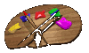

W E B S I T E ! ! !

Mashups
Albums
Paintings
Drawings
Photos
UW Daily Illustrations
Dead End Test Renders
Miscellaneous
Point & Clicks
Chord Wheel
Tetriven
Catan-o-Rama!
Nabanagrams
Soviet Monopoly
Game of Cards
Automata
Cirque de Sabotage
MXBBI
Drop
Griven
Grounded
College
Christian Bök
You're Little
ABBA CD
TheRaven.java
High School
Great Apes
Fruit Flies
By the Waters of Babylon: The Reawakening
Mr. Oates
Middle School
Shakespearean Friday
Disilluminated Poem
Zirconium
Ms. Knottethin
How to Write a How-To Essay
Newport Field Trip Haikus
Planet Limericks
Elementary School
The Flagellants
The Adventures of George W. Bush
John Adams Poem
Other
Palindromes
Alphabet Sayings
Miscellaneous
Videos